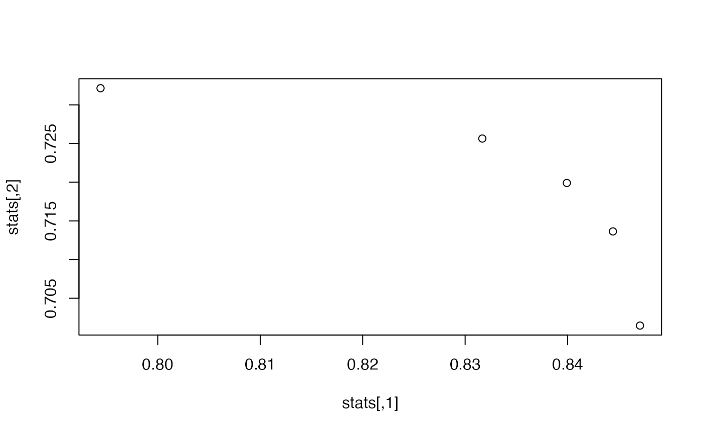

R/paretoObjectivesVaryWeights.R
paretoObjectivesVaryWeights.RdEstimate multi-objective Pareto front using multiple weighted single objective optimisations
paretoObjectivesVaryWeights(
MODEL,
objective = hydromad.getOption("objective"),
weights,
fitBy,
...
)a model specification created by hydromad. It
should not be fully specified, i.e one or more parameters should be defined
by ranges of values rather than exact values.
objective functions to maximise, as a list with elements as
function(Q, X, ...). See objFunVal.
matrix of weights to use, with columns in the same order as
objective
function to estimate parameters of MODEL, e.g.
fitByOptim, fitBySCE
Arguments passed to fitBy
runlist of models on Pareto front, corresponding to
the weights specified for each objective
data(Cotter)
x <- Cotter[1:1000]
## IHACRES CWI model with exponential unit hydrograph
## an unfitted model, with ranges of possible parameter values
modx <- hydromad(x,
sma = "cwi", routing = "expuh",
tau_s = c(2, 100), v_s = c(0, 1)
)
## Uncomment to parallelise the fitBy runs
# library(parallel)
# cl <- makeCluster(getOption("cl.cores", 2))
# clusterEvalQ(cl,library(hydromad))
# hydromad.options(parallel="clusterApply")
## Optimisation of multiple weights for r.sq.log and r.squared
weights <- cbind(c(0, 0.33, 0.5, 0.67, 1), 1 - c(0, 0.33, 0.5, 0.67, 1))
## Estimate parameters using single fitByOptim run
## from single initial parameter set
front <- paretoObjectivesVaryWeights(modx,
objective = list(hmadstat("r.sq.log"), hmadstat("r.squared")),
weights = weights, fitBy = fitByOptim, samples = 1
)
summary(front)
#> rel.bias r.squared r.sq.sqrt r.sq.log
#> 0_1 -1.067195e-16 0.7321522 0.8062483 0.7944156
#> 0.33_0.67 -4.821344e-17 0.7256469 0.8263959 0.8316768
#> 0.5_0.5 -3.091922e-17 0.7199028 0.8293105 0.8399247
#> 0.67_0.33 1.063082e-17 0.7136401 0.8295052 0.8444205
#> 1_0 2.264742e-17 0.7014670 0.8264166 0.8470626
## Plot objectives
stats <- t(sapply(front, objFunVal, objective = list(hmadstat("r.sq.log"), hmadstat("r.squared"))))
plot(stats)
